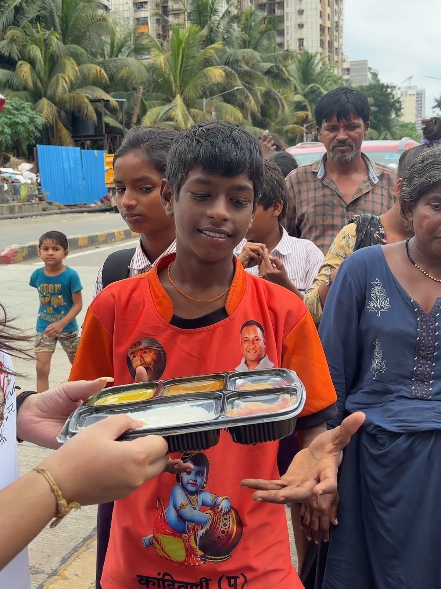

Start the ALMS server with
npm start so forms can save to the database.


Food belongs on plates.
Donate surplus meals. ALMS matches them with nearby people, NGOs and volunteers.
Get started
Choose how you want to help — every role is saved in the ALMS database.
Donate with ALMS
Choose a donation type. Posts are stored and counted toward the community pool.
Priority engine
Expiry · urgency · people fed · distance · weather · volunteers
—Donations stored
96 priorityCooked meals · 45 min left
87 priorityWedding food · feeds 250
Demand alerts & reminders
Restaurants receive a surplus reminder before closing.
Emergency donation
Proof is compulsory for urgent relief posts.
Request food
For hospital caregivers, patients’ families, elderly people and anyone in need.
Live rescue map
Green: food
Red: hunger
Blue: volunteers
Green Park community pool
163 of 250 meals collected · Tap for details
Carbon footprint
92 kg CO₂estimated emissions avoided from stored meals
Network so far
—volunteers and NGO / shelter registrations